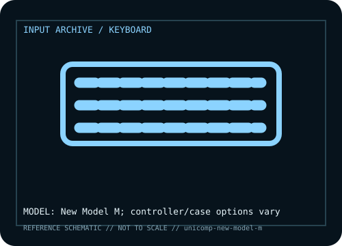

[ KEYBOARDS AND INTEGRATED POINTING DEVICES // IDENTIFIED COMPONENT ]
Unicomp New Model M
Modern buckling-spring keyboard based on the Model M mechanism, sold with differing cases, layouts, and controller options.

MODEL IDENTIFICATION: Manufacturer model / identifier: New Model M; controller/case options vary. Compare the unit label, regional suffix, and revision against manufacturer documentation before repair or compatibility claims.
Model specifications
| Catalog subcategory | Keyboards and integrated pointing devices |
|---|---|
| Exact model / ID | New Model M; controller/case options vary |
| Model-specific features | Full-size buckling-spring key matrix; layout, case and controller vary by order; tactile mechanism differs from membrane/linear switches. |
| Interface and host support | USB or PS/2 depends on controller/cable. PS/2 needs a compatible port or active converter; passive adapters do not translate protocol. |
| Revision / driver caveat | Read the unit label, layout, controller and connector; the New Model M family spans multiple builds. |
Preservation and service notes
Keep liquids away from barrel assembly; record controller board and retain keycaps. Internal service can disturb membrane and rivets.
Record the as-found label, accessories, host OS, driver or firmware version, and test method. Separate observed condition from published specifications; family-level claims are not proof of an individual unit's revision.
Manufacturer source
- Unicomp New Model M — manufacturer model pageModel-specific manufacturer reference for identifying specifications, regional SKU, and linked current support documentation.
Manufacturer pages can change or retire. Preserve the applicable manual and note its revision when documenting a physical device.